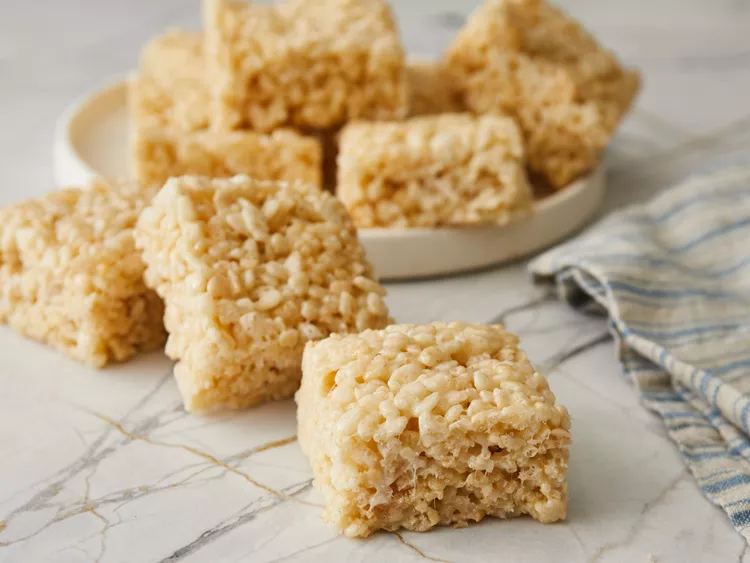

Marshmallow Rice Krispie Treats

Description
These squidgy crispy rice treats are made with just 3 ingredients.
Ingredients:
- ¼ cup butter
- 4 cups miniature marshmallows
- 5 cups crispy rice cereal
How to make the Marshmallow Rice Krispie Treats:
- Step 1: Melt butter in a large saucepan over low heat.
- Step 2: Add marshmallows and stir until melted and well combined. Cook 2 minutes longer, stirring constantly. Remove from heat.
- Step 3: Stir in crispy rice cereal until well coated.
- Step 4: Press mixture evenly and firmly into a buttered 9x13-inch pan using a buttered spatula or waxed paper.
- Step 5: Cut into 2-inch squares when cool.
- Step 6: Enjoy!
This recipe was directly stolen from Allrecipes.com since I don't have the slightest clue on how to be in a kitchen. Thank you.